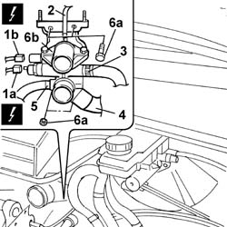
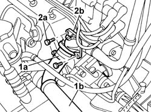

1088C40 THERMOSTAT- R + R
- Path
- Procedures > 10 ENGINE UNIT > 1088 ENGINE COOLING > 1088C WATER PUMP AND THERMOSTAT > 1088C40 THERMOSTAT- R + R
- Kind
- repair procedure (removal / refitting; the operation number is the code)
- Applies to
- engines: 2.0 16V, 2.8 JTD 8V; all production periods
- Interactive page
- https://sloeber94.github.io/elrnDB-fDct/en/#/244000950
Applies to: engines: 2.8 JTD 8V; all production periods
 Removing
Removing
 Refitting
RefittingOp. 0010T20 COOLANT CHECK DENSITY AND TOP UP IF NECESSARY
See in Op. 1048A10
See in Op. 1048A21
See in Op. 1048B22
See in Op. 1048B14
See in Op. 1016A10
See in Op. 1088D14
See in Op. 1088D10
1. Disconnect the electrical connection (1a) for the sender unit and the electrical connection (1b) for the sensor.
 | Description | Connector |
|---|---|---|
1a | Coolant temperature sending unit (for instrument panel) | K035 |
| Description | Connector |
|---|---|---|
1b | Engine coolant temperature sensor/sender unit | K036 |
2. Release the coolant recirculation pipe.
3. Release the additional heater pipe.
4. Release the hose for the rigid pipe from the thermostat.
5. Release the hoses for the water/oil heat exchanger.
6. Undo the fixing nuts and bolts (6a) and remove the thermostat.

Applies to: engines: 2.8 JTD 8V; all production periods
Refitting
Removing- Fit a new seal.
- Position the thermostat on the cylinder head and tighten the fixing nuts and bolts, checking the torque.
 | Value - daNm | Fastening | Component | Ø |
|---|---|---|---|---|
. | 1,8 | Bolt | THERMOSTAT | M8 |
- Connect the electrical connections at the thermostat.
| Description | Connector |
|---|---|---|
. | Coolant temperature sending unit (for instrument panel) | K035 |
| Description | Connector |
|---|---|---|
. | Engine coolant temperature sensor/sender unit | K036 |
- Fit the water/oil heat exchanger pipes and the hose for the rigid pipe to the thermostat.
- Fit the coolant recirculation pipe and the additional heater pipe to the thermostat.
See in Op. 1088D10
See in Op. 1088D14
See in Op. 1016A10
See in Op. 1048B14
See in Op. 1048B22
See in Op. 1048A21
See in Op. 1048A10
Applies to: engines: 2.0 16V; all production periods
Removing
RefittingSee in Op. 1048A21
Op. 1048A39 SLEEVE FROM AIR CLEANER TO RIGID PIPE - R R
1. Remove the band (1a) and release the coolant oulet hose from the thermostat (1b).
2. Undo retaining bolts (2a) and remove thermostat (2b).

Applies to: engines: 2.0 16V; all production periods
Refitting
Removing- Place the thermostat in the housing.
- Tighten the bolts fixing the thermostat.
- Fit the hose and restore the bands removed previously.
Op. 1048A39 SLEEVE FROM AIR CLEANER TO RIGID PIPE - R R
See in Op. 1048A21